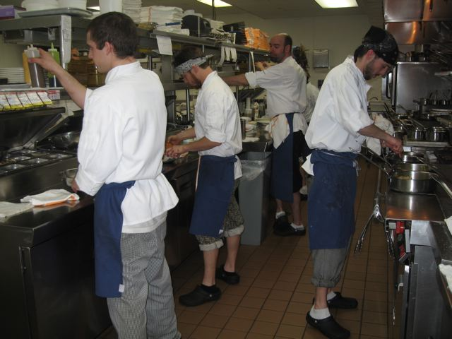
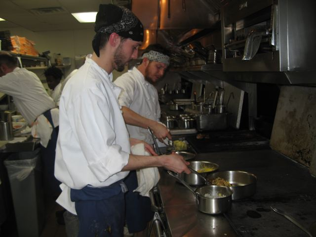
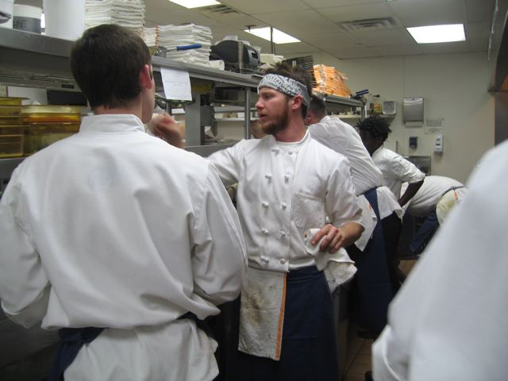
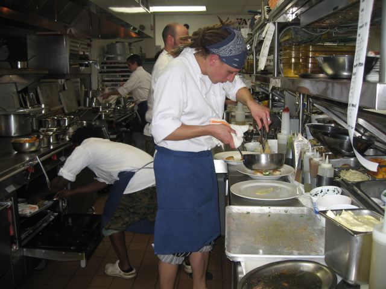
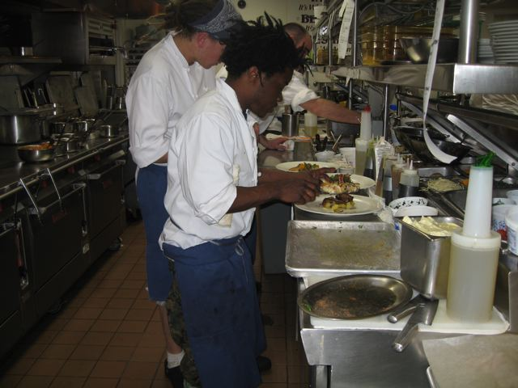

Kitchen experience
Chef’s Table
Dine exclusively in our kitchen with Chef Daniel Schurr and his staff.
Second Empire Restaurant and Tavern offers a Chef’s Table for 2 to 4 people to dine exclusively in our kitchen with Chef Daniel Schurr and his staff.
Each dinner features a five-course menu, four of which are paired with wine. We offer three Chef’s Table menus. Our classic tasting menu features seasonal dishes for adventurous eaters. Our pescatarian menu highlights our selection of fresh from the ocean fare. We also offer a vegetarian experience, featuring a wide variety of earth-bound offerings. Please select one of these options for all the diners in your group.
While most of our menu is gluten free, we are unfortunately unable to accommodate other allergies or dietary restrictions.
The Chef’s Table is available Tuesday–Friday evenings based on availability at 6:00 pm and can be made by calling Second Empire directly at 919-829-3663 or emailing Amanda Eudy at amanda.eudy@second-empire.com.




